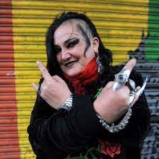
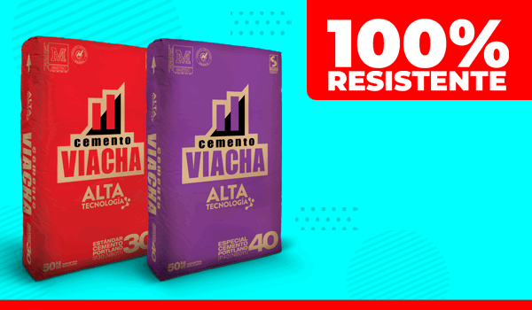

BOLIVIA PIERDE EN LA ALTURA 4-0
GBSAN JOSE SE REFUNDA
El club san jose sumido en una profunda crisis en la gestion 2021 descendio ala asociacion de futbol de oruro
EMOTIVO MOMENTO DEL EQUIPO JUVENIL DE SAN JOSE
‘Gato’ Fernández: “No tenemos nada para ofrecerle a Bielsa”.
🔵 ¿El Centro Deportivo de Ananta será de Bolívar? — 'Sí, pero No'.
Viva Viva Mi San Jose de Oruro (Video Musical).
Viva Viva mi San José | Festival de Bandas Oruro 2020 |.
🇧🇴⚪🔵#SanJosé | Ingreso del Equipo Santo, recibimiento de la Temible en Cochabamba 2018
⚽ San José es local en Cochabamba en el Félix Capriles. (Pruebas 👇)

POLITICA Y SOCIEDAD

Maria Galindo manda a la m a andronico.
